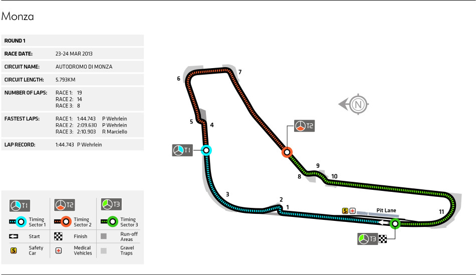

Circuitos
1. Monaco

La pista de Mónaco, conocida como el Circuito de Mónaco o Circuito de Monte Carlo, es uno de los circuitos más emblemáticos y desafiantes de la Fórmula 1.
Situado en las estrechas y sinuosas calles del Principado de Mónaco, este trazado urbano presenta curvas cerradas, cambios de elevación y un túnel icónico.
Con una longitud de aproximadamente 3.34 km (2.08 millas), la pista es famosa por su dificultad para adelantar, lo que hace que la clasificación sea crucial.
Las barreras están muy cerca del asfalto, dejando poco margen de error y poniendo a prueba la precisión y habilidad de los pilotos.
La carrera en Mónaco es un evento prestigioso y glamoroso, atrayendo a la élite mundial y a numerosos aficionados.
2. Monza
 La pista de Monza, conocida formalmente como el Autodromo Nazionale Monza, es uno de los circuitos más antiguos y legendarios del automovilismo.
Ubicada cerca de Milán, Italia, esta pista es famosa por su alta velocidad y largas rectas, ganándose el apodo de "El Templo de la Velocidad".
Con una longitud de 5.793 km (3.6 millas), Monza es una de las pistas más rápidas del calendario de Fórmula 1, permitiendo a los autos alcanzar velocidades máximas impresionantes.
El circuito cuenta con características icónicas como la Curva Parabólica y las chicanes variantes, que añaden un desafío técnico a la alta velocidad del trazado.
La historia y la tradición de Monza, junto con su apasionada afición italiana, crean una atmósfera única en cada Gran Premio, convirtiéndolo en uno de los eventos más esperados de la temporada de Fórmula 1.